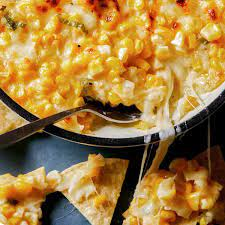

Korean Corn Cheese

What is it?
It’s a simple and delicious side dish most commonly served and eaten with
Korean BBQ. At restaurants it’s often made in an insert around the grill right
at the table, or brought to the table in a sizzling, bubbling, hot dish.
As a college student, I make a very informal version myself.
Traditional ingredients:
- Sweet corn
- Choice of cheese (typically mozzarella but I use whatever I have e.g. cheddar)
- Salt
- Pepper
- Green Onion
- Mayo (but I typically don't use it)
Steps
Disclaimer: this is my version as a budge college student.
- Heat up your frozen corn by boiling
- While your corn is cooking, prepare a bowl with your choice of cheese and green onions
- Once the corn is properly cooked, drain the corn from the water and add to bowl
- Add black pepper and optional salt to taste and stir while the corn is hot,
allowing the cheese to melt
Take me back!